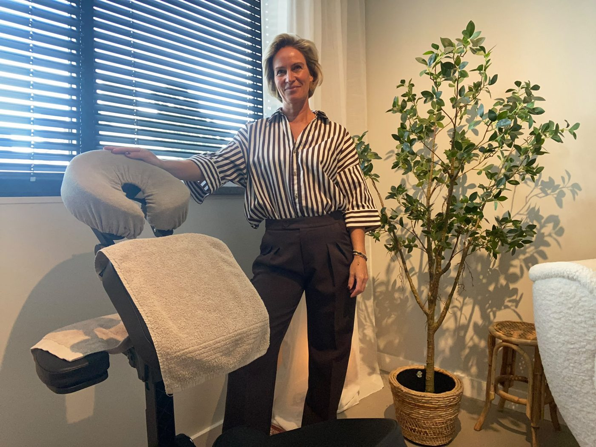
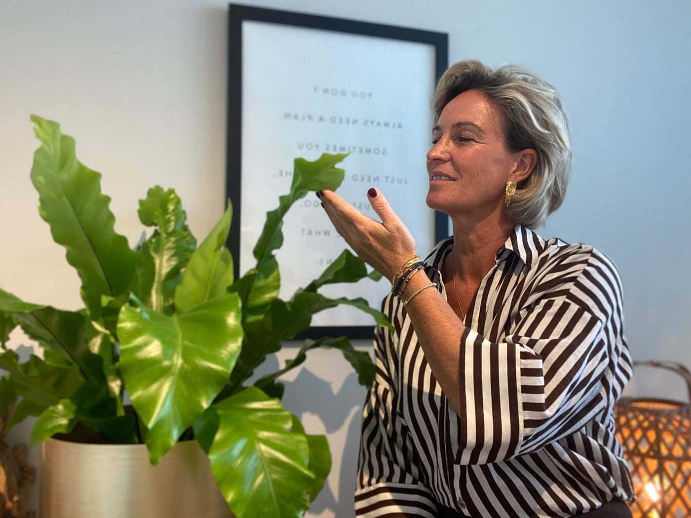

Een gespannen lijf. Een druk hoofd. Weinig energie. Herkenbaar?
Bij Essentia Holistic Care kijk ik verder dan alleen de klacht — naar wat er in jou als geheel om aandacht vraagt. Via guasha, via bewustzijnscoaching, of allebei.

Je bent hier waarschijnlijk niet toevallig.
- Gespannen of pijnlijk lichaam
- Nek-, schouder- of rugspanning
- Weinig energie
- Een druk hoofd
- Stress of onrust
- Emoties die veel energie kosten
- Niet meer echt vrij of vitaal voelen
Lichaam, gedachten en emoties hangen samen.
Fysieke spanning gaat zelden alleen over het lichaam. Wat je denkt en voelt speelt vaak mee — en veel daarvan gebeurt automatisch, zonder dat je het doorhebt. Misschien hoef je je klacht dus niet alleen te bestrijden, maar mag je kijken naar het geheel.
Ik reik je de mogelijkheden aan, met liefde en vertrouwen. Wat je ermee doet — en van waaruit — is en blijft van jou.
Kies wat het meest bij jou past.
Twijfel je? Dat hoeft niet erg te zijn — ik help je graag de juiste ingang kiezen. Stuur gerust een appje als je er niet uitkomt.
Druk hoofd, gespannen nek en rug
Malende gedachten. Een hoofd dat niet uitzet. Spanning die al weken in je nek en rug zit. Een hoofd/nek/rug-behandeling brengt je zenuwstelsel terug in rust — en soms is dat pas het begin.
Bekijk lichaamsbehandelingen → GezichtGewoon heerlijk ontspannen
Geen zware klacht — gewoon zin om te genieten en helemaal tot rust te komen. Dan is dit 'm. Zacht, verzorgend, en een uurtje dat volledig van jou is.
Bekijk gezichtsbehandeling → BewustzijnVastzittende patronen, geen richting
Je functioneert prima, op papier. Maar voelt het ook zo vrij als het eruitziet? Bewustzijnswerk via coaching helpt je ontdekken wat er gebeurt als je stopt met vechten tegen jezelf.
Bekijk coaching →Klik op de zone waar de spanning zit.
Zo zie je meteen wat er standaard te boeken valt — en wat we samen als maatwerk bespreken.
Gezicht · Rug/nek/schouders/armen · Been
Klik op het figuur hiernaast — het hoofd voor een gezichtsbehandeling, het lichaam voor rug, nek, schouders of armen, of een been voor een beenbehandeling.
Waar het lichaam loslaat wat het hoofd vasthoudt.
Nek- en schouderpijn. Spanningshoofdpijn. Een rug die blijft protesteren. Vermoeidheid die niet weggaat. Herkenbaar? Veel mensen die bij mij komen, hebben al een heel pad afgelegd — fysiotherapie, de chiropractor, de osteopaat, een sportmasseur, misschien pijnstillers om een drukke week door te komen. Steeds hetzelfde patroon: even verlichting, en dan is de spanning terug, vaak precies op dezelfde plek.
Deze behandeling is daar perfect voor: guasha kijkt verder dan het symptoom en brengt de onderliggende spanning naar de oppervlakte, zodat je lichaam écht kan herstellen.
- Nek- en schouderpijn
- Spanningshoofdpijn
- Rugklachten
- Zware, stijve benen
- Vermoeidheid
- Frozen shoulder
- Terugkerende klachten na fysio
Kies je behandeling
Twijfel je, of heb je een vraag? Stuur me gerust een berichtje.
Nieuwsgierig wat guasha precies is?
Guasha — letterlijk "sha schrapen" — is een eeuwenoude techniek waarbij ik met een gladde steen, meestal jade of rozenkwarts, met gerichte druk over de met olie ingesmeerde huid strijk. Waar spanning of overbelasting al langer vastzit, ontstaat stagnatie; door te schrapen breng ik die naar de oppervlakte. Dat is het moment waarop sha verschijnt — kleine rode tot paarsrode vlekjes, zichtbaar bewijs dat er iets is losgemaakt zodat het lichaam het kan afvoeren. Sha trekt vanzelf weg binnen 3 tot 7 dagen.
Totale ontspanning van lichaam én geest.
Een gezichtsbehandeling met guasha is meer dan verzorging — het is een complete ervaring. Met een gladde steen werk ik langs de meridianen en acupunctuurpunten van je gezicht: een zachte, opwaartse massage die de doorbloeding en lymfestroom op gang brengt, spanning in de kaak en het voorhoofd laat wegsmelten, en je huid een frissere, stralende uitstraling geeft.
Terwijl je gezicht ontspant, ontspant je hele lichaam mee. Adem wordt dieper, gedachten worden stiller. The whole shabang: van top tot teen tot rust komen, via je gezicht als ingang.
Zit de spanning meer in je hoofd zelf — malende gedachten, een hoofd dat niet uitzet — dan past een hoofd/nek/rug-behandeling vaak beter, eventueel aangevuld met coaching.
- Gespannen kaak
- Vermoeide uitstraling
- Doffe huid
- Wallen en zwelling
- Spanning rond de ogen
- Fijne lijntjes
- Volledige gezichtsbehandeling
- Zachte, verfijnde guasha-techniek
Voor wie de regie wil ervaren en gezonder om wil leren gaan met teleurstellingen, problemen en uitdagingen.
Startende ondernemer met knikkende knieën? Vastlopend op een leidinggevende? Een relatie die niet ontspannen voelt? Bewustzijnswerk via coaching helpt je weer de regie te pakken — niet door de situatie te veranderen, maar door hoe jij erin staat.
Voor wie wakker wil worden, zichzelf beter wil begrijpen en klaar is voor een volgende stap. Vaak ontbreekt niet de wil om vooruit te gaan, maar de kennis en ervaring om dat effectief aan te pakken. Hoofd en hart spreken dan niet meer dezelfde taal — met meer spanning, zwaardere besluiten en een leven dat er op papier goed uitziet, tot gevolg.
- Belemmerende patronen
- Laag zelfbeeld
- Moeite met richting kiezen
- Lastige emoties
- Piekeren zonder landing
- Succesvol maar niet gelukkig
Ervaringsgericht, niet alleen cognitief. Praten alleen verandert weinig — inzicht in je hoofd beklijft niet vanzelf. Daarom werk ik ervaringsgericht: jouw eigen ervaring, wat je voelt terwijl het gebeurt, is leidend voor je eigen verandering.
Wat levert dit traject je op?
- Tools voor de rest van je leven
- Een verbeterd zelfbeeld
- Van oordeel naar helderheid
- Gezond omgaan met gevoelens, sensaties en emoties
- Gezond omgaan met uitdagingen en problemen
- Korte pijn, lang geluk
Het doel is niet dat je mij nodig blijft hebben.
Effectief en duurzaam herstel — dat vind ik het belangrijkste van alles. Dat je zelf weer in staat bent om te helen, om gezond te blijven, om te voelen wanneer iets vraagt om aandacht. Niet dat je van mij afhankelijk wordt.
Een ontspannen behandeling, gewoon omdat je jezelf dat cadeau wilt doen? Altijd welkom — daar hoeft niets zwaars aan te hangen. Maar als het bij symptomen wegmasseren blijft, terwijl er onder die spanning iets ligt dat om echte aandacht vraagt, dan gun ik je meer dan dat. Dan gun ik je de kans om daadwerkelijk vrij te leven — vanuit jezelf, niet vanuit wat je lichaam noodgedwongen moet blijven signaleren.

Thuiskomen in jezelf.
Alsof er ergens een betere versie van mij klaarstond, en ik daar pas mocht aankomen zodra ik genoeg had opgelost. Ik weet inmiddels: zo werkt het niet. Vrijheid ontstaat niet pas als alles is opgelost — die ontstaat middenin wat er al is, zodra je ontdekt dat je nog steeds kunt waarnemen, kiezen en sturen. Zo sta ik zelf in het leven, en zo begeleid ik ook anderen.
Waar ik blij van word? Van écht contact. Van het moment dat iemand tegenover me weer even helemaal zichzelf voelt — geen rol, geen verhaal, gewoon landen in zichzelf. Ik ben een praktijkmens: ik leer door te leven, te ervaren en met mensen te werken, niet uit de theorie alleen.
Mijn achtergrond: ik ben HBO-gecertificeerd Holistisch Doorbraakcoach bij Unlimited People, waar ik nog twee dagen per week werk als mental coach — ik begeleid daar mensen die zijn uitgevallen of dreigen uit te vallen door stressklachten, mentaal, emotioneel en fysiek, naar duurzaam herstel. Daarnaast ben ik guasha therapeut en volg ik de opleiding in modules bij Santai Guasha in Eindhoven. Vanuit die mooie aanvulling — letterlijk met het lichaam bezig zijn — is Essentia Holistic Care ontstaan: hoofd en lichaam die bij elkaar komen.
De waarden van waaruit ik werk: vrijheid, autonomie, authenticiteit, gelijkwaardigheid, moed.
Wat je kunt verwachten als we samen aan jouw doelen en wensen werken: gelijkwaardigheid, geen coach die boven je staat. Ik zet in wat nodig is — guasha, coaching, of allebei. Als katalysator: niet degene die het voor je oplost, maar die maakt dat jij het zelf weer kunt zien. En het liefst rustig, dichtbij, één cliënt per keer, alle tijd, geen haast.
Nieuwsgierig? Stuur me een appje5,0 sterren van cliënten uit Best en omgeving.
"Carine is heel professioneel, warm en hartelijk. Alles is altijd goed verzorgd en ze luistert met een open hart en oprechte interesse. Of je nu coaching bij haar volgt of een guasha behandeling, bij haar ben je in goede handen."
"Bijzonder! Niet zomaar een lichamelijke behandeling. Door een onverwachte open vraag te combineren met de guasha neemt Carine je mee in een prachtige ervaring. Ik heb spieren gevoeld waarvan ik niet eens wist dat ik ze had. Aanrader!"
"De guasha behandelingen hebben een positieve bijdrage gehad aan het herstel van mijn burn-outklachten en overprikkeling van mijn zenuwstelsel. Daarnaast heb ik veel baat gehad bij de vakkundige begeleiding van Carine. Ik kan het iedereen aanraden."
"Ik heb Carine leren kennen als een lieve, warme vrouw die weet waar ze over praat en vol passie haar vak beoefent. Loop je ergens tegenaan, dan ben je bij haar op het juiste adres om samen op zoek te gaan naar de verandering die je nodig hebt."
"Betrouwbaar, eerlijk, behulpzaam, intelligent, kennis van zaken, geduldig en goed geschoold — altijd het juiste advies om je verder te helpen. Bij Carine zit je goed als je het zelf even niet meer weet."
"Ik wil je bedanken voor alle sessies die we gedaan hebben. Wonderlijk hoe het me hielp. Ik heb weer positieve energie voor de mensen en de dingen om me heen!"